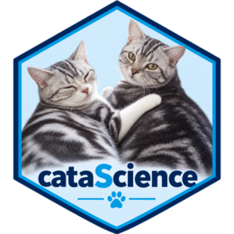

cataScience 可用于教师带领的培训或自学。根据学员背景与时间选择模块，用应用演示，再让学员独立操作。本指南根据包内教师手册和实验材料整理。
扩展培训版
run_catas()
启动连贯的扩展工作流，run_cata()
启动经典版，两个入口都保留。
老挝培训可从 Why data matters 开始：先让学员预测结果，再揭示分母；讨论 Snow 地图能够和不能够支持的判断；检查数据集 A 的服务级联。A 的地区汇总数独立于 B/C 的合成个人记录。
在 Workflow 中加载 Dataset B: reference with flags，阅读代码本、检查键，再关联机构表。声明为“多对一”的关联保留 604 条记录，其中两条没有匹配。Apply course S7 selection 保留 587 条记录。比较 Yes/No 分母与全部选定记录，并让 Unknown 和空白继续可见。每一步保留样本数与代码，支持撤销。
Statistics → Public health example 的固定示例复现课程中的 604、604、587、582、577 和 575 个样本数。卡方检验与回归使用不同的明确分母；所有回归模型使用相同的 575 条预测变量完整记录，以 Female 和 Health Center 为参照。解释区间之前，应讨论选择过程、函数形式及机构内相关性。
使用 Cleaning → Multiple imputation 比较完整合成数据、完整案例、均值替换和多重插补合并结果，查看完成的数据与迭代链。链看起来稳定，不能证明真实研究中的缺失机制假设正确。
在 Workflow → Visualise
用相同汇总数据比较柱状图与排序点图。请学员先写出有依据的发现和局限，再进入
Communicate。HTML 报告和 dashboard 可离线打开；项目 ZIP
包含原始输入快照、选定记录、整理代码、RStudio 项目以及 Quarto 和 Shiny
源文件。分享前检查其中数据；在导出项目目录重新运行
analysis.R
检查可复现性。数据改变后，文字结论仍需人工审阅。
独立的 AI 图表练习应向各工具提供相同的合成数据和问题，再与 R 输出比较数值、分母、刻度及强调的信息。应用本身不要求 AI 服务或 API 密钥。
出行前安装所需包，可选安装 VIM 和 DSIR；断网后测试两个本地入口与导出功能。现成的 HTML 导出不需要 Quarto。
按学习目标选择模块
| 目标 | 建议模块 | 学习成果 |
|---|---|---|
| 分析前检查数据 | Import、Missing data、Outliers | 解释一个数据问题和合理处理方式 |
| 传达发现 | Visualize、Describing data | 选择图表，并说明分母和局限 |
| 理解统计比较 | Normal distribution、t-test、Regression | 说明假设，区分关联与因果 |
| 有效使用 AI 助手 | Prompting levels、Prompt gallery | 明确任务、背景、输出和检查标准 |
| 审阅 AI 分析 | AI-assisted analysis、When AI gets it wrong | 判断哪些结论应保留、修改或删除 |
以下时长是规划参考，请按人数、经验和网络条件调整。
三小时数据科学课程
| 开始时间 | 活动 | 形式 |
|---|---|---|
| 00:00 | Home：工作流与分析目的 | 简介 |
| 00:15 | Import：加载猫咪数据并检查 | 实操 |
| 00:40 | 缺失数据：比较两种方法 | 实操与讨论 |
| 01:05 | 异常值：错误、罕见值还是重要信号？ | 实操与讨论 |
| 01:30 | 休息 | 休息 |
| 01:40 | Visualize：比较清理前后的图表 | 实操 |
| 02:10 | AI 辅助分析与审阅练习 | 小组活动 |
| 02:40 | 按已学主题进行 Quiz | 理解检查 |
| 02:55 | 带走的决策与问题 | 总结讨论 |
清理活动使用数据质量工作流。以猫咪数据为主要练习；学员理解工作流后，再简短扩展到卫生指标数据。
两小时 AI 课程
| 开始时间 | 活动 | 形式 |
|---|---|---|
| 00:00 | Home：目的、角色与预期 | 简介 |
| 00:10 | AI → Prompting levels | 演示与短练习 |
| 00:35 | AI → Prompt gallery：改写三到四条提示词 | 演示与实践 |
| 01:15 | AI → When AI gets it wrong | 案例与讨论 |
| 01:30 | AI → AI safety | 讨论内置指南 |
| 01:40 | 已学 AI 主题的 Quiz 与答疑 | 理解检查 |
全天课程可上午进行数据科学、下午进行 AI。用选定的 Statistics 页面衔接，最后讨论方法案例并完成测验。
准备场地和电脑
| 版本 | 学员条件 | 课前准备 |
|---|---|---|
| 在线版 | 支持的桌面浏览器及网络 | 提前打开链接，完成下载并测试交互和导出 |
| R 包 | R、依赖包和浏览器，建议使用 RStudio | 提前安装，测试 run_cata() 和 run_catas() |
| Windows 便携版 | 兼容的 Windows 电脑，维护者另行提供 | 完整解压到较短的本地路径，测试启动器 |
安装 R 包不会自动生成便携式可执行程序。
本地包课前可发送以下命令：
install.packages("cataScience")
library(cataScience)
run_cata()随后确认学员能加载示例、显示图表并打开测验。在投影仪上检查字号和缩放。保留一份 Home 的 Download datasets 所提供的练习文件。
本地版内置活动可离线运行，外部 AI 演示需要网络及相应账户。网络较弱时，使用事先准备的例子和 Prompting levels 页面中的示例讨论。
带领 20–30 分钟练习
| 分钟 | 活动 | 教师提问 |
|---|---|---|
| 0–3 | 明确任务 | 请求汇总之前，应先检查什么？ |
| 3–8 | 导入和检查 | 一行代表什么？哪里存在缺口？ |
| 8–15 | 比较缺失值处理 | 什么假设使这项选择合理？ |
| 15–22 | 调查异常值 | 这是错误、罕见值还是重要信息？ |
| 22–27 | 比较图表 | 样本、分布或传达的信息是否改变？ |
| 27–30 | 回顾 | 使用结果前，必须记录哪项决策？ |
每次演示一个小任务，给学员重复操作的时间，再讨论变化。比较方法时重置数据，不要连续应用多项清理而跳过中间检查。解释单次插补会减少表观变异；正式分析中可能更适合考虑多重插补。
练习带检查标准的提示词
让学员将以下任务改写为适合非敏感示例数据的版本：
分析之前，请先检查所附数据集。说明一行代表什么，列出变量和单位，检查缺失值、重复标识符和异常观测。提出一个简短的 R 描述性分析方案。解释每项清理选择，修改原始数据前先征求我的同意。返回发现表，以及仍需人工审阅的决策清单。
检查助手是否遵循任务、检查是否正确。涉及指标时，应提供并核对当前定义和方法，不依赖助手记忆。
审阅 AI 生成的分析
准备一份包含明确结论、图表和方法的简短分析。让每组使用 保留、修改、删除 三类标签，并为每类至少解释一个判断。
| 方面 | 检查问题 |
|---|---|
| 数据和指标是否匹配 | 定义、单位、年份、地区、人群和分母是否清楚？ |
| 数据质量 | 是否调查缺失、重复和异常值？ |
| 描述性结论 | 汇总和图表是否适合变量类型与问题？ |
| 因果表述 | 是否混淆关联与因果，或忽略其他解释？ |
| 背景 | 各组或各年之间，覆盖率、定义或报告做法是否可能不同？ |
| 沟通 | 结论是否得到证据支持，是否说明相关局限？ |
最后用两句话说明证据提示什么，以及它支持哪项决策或进一步检查。目标是形成有用、有依据的解释，不只是发现代码错误。
完整实验脚本和审阅清单位于 AI-assisted analysis；原教师手册位于 Training → Training guide。
用测验支持讨论
选择已覆盖的主题并点击 Apply topics and restart。这会重启测验并清零分数。回答后讨论解释，尤其关注不同组为什么作出不同的清理决策。
最终练习前，先确认学员理解指标的地区、年份、单位和方法。简单的国家平均值只是所含国家的描述性汇总，不自动等于按人口加权的区域估计。
留下分析记录
让学员保留原始文件，并简要记录问题与人群、每项清理决策和理由、采用的图表或汇总、AI 提供了什么帮助及如何检查，以及仍未解决的局限和下一步。
packageVersion("cataScience")
#> [1] '2.2.0'自学者可按同样顺序缩短模块选择，使用测验解释复习。支持与反馈见 cataScience 仓库。